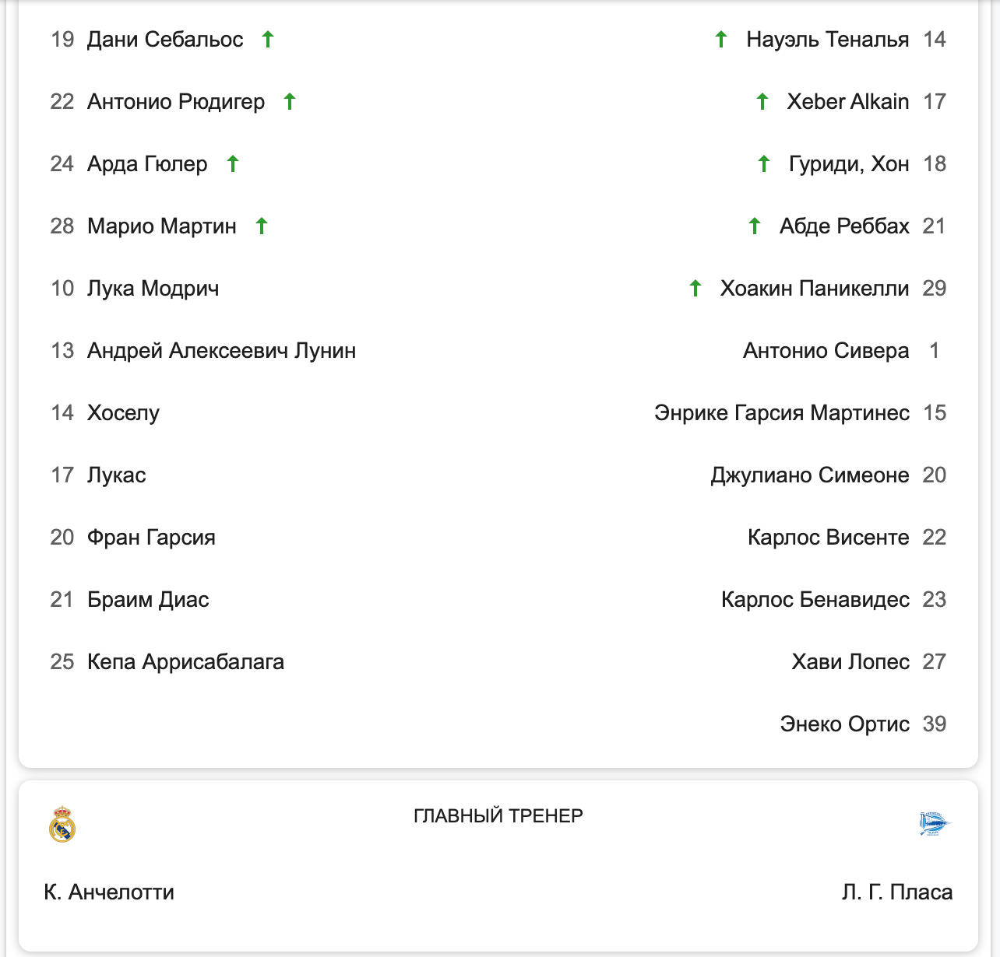
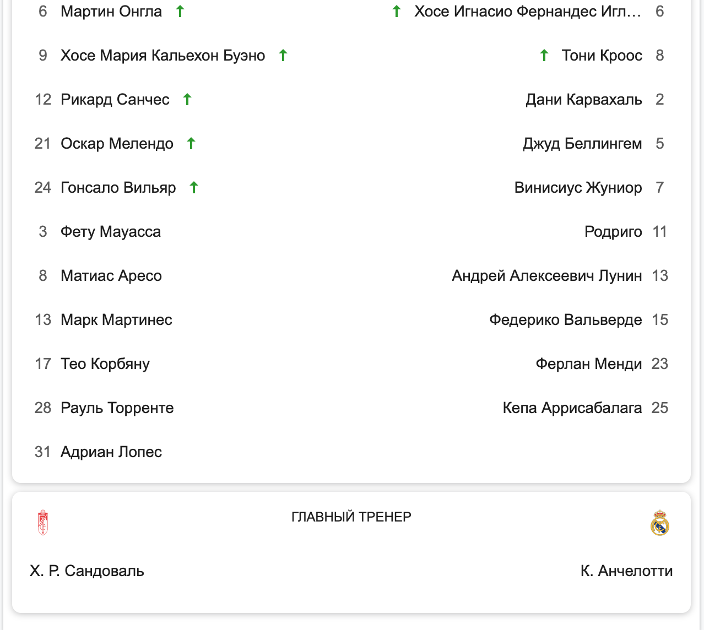

0 - 2
0 - 2
Финал

Дани Карвахаль 74' Винисиус Жуниор 83'
13 Удары по воротам 13 4 Удары в створ 6 42% Владение мячом 58% 403 Пасы 549 85% Точность пасов 91% 12 Фолы 8 3 Желтые карточки 1 0 Красные карточк 0 1 Офсайды 0 9 Угловы 8

9 Себастьен Алле🔼 3 Эдер Милитан🔼 11 Марко Ройс 🔼 10 Лука Модрич🔼 21 Дониелл Мален 🔼 14 Хоселу🔼 43 Джейми Байно-Гиттенс🔼 17 Лукас🔼 6 Салих Озджан 4 Давид Алаба 8 Феликс Калу Нмеча 13 Андрей Алексеевич Лунин 17 Мариус Вольф 18 Орельен Чуамени 18 Юссуфа Мукоко 19 Дани Себальос 25 Никлас Зюле 20 Фран Гарсия 33 Александр Мейер 21 Браим Диас 35 Марцел Лотка 24 Арда Гюлер 38 Кьелль-Арик Ветьен 25 Кепа Аррисабалага ГЛАВНЫЙ ТРЕНЕР Эдин Терзич К. Анчелотти
Ла Лига 38-тур
Статистика команд
13 Удары по воротам 11 5 Удары в створ 3 60% Владение мячом 40% 645 Пасы 436 93% Точность пасов 85% 8 Фолы 11 2 Желтые карточки 1 0 Красные карточк 0 4 Офсайды 2 4 Угловы 5
3 Эдер Милитан🔼 7 Абде Эззалзули🔼 10 Лука Модрич🔼 27 Серхи Алтимира🔼 17 Лукас🔼 1 Клаудио Браво 19 Дани Себальос🔼 20 Абнер Винисиус 25 Кепа Аррисабалага 🔼 38 Ассане Диао 13 Андрей Алексеевич Лунин 8 Набиль Фекир 14 Хоселу . 20 Фран Гарсия. 21 Браим Диас. 24 Арда Гюлер. 28 Марио Мартин. ГЛАВНЫЙ ТРЕНЕР К. Анчелотти М.Пеллегрини
 4 - 4
4 - 4
Ла Лига 37-тур
Александор Серлет 39',48',52',56', Арда Гулер 14', 45+2' Хоселу 83' Лукас 40'
21 Удары по воротам 12 7 Удары в створ 6 43% Владение мячом 57% 502 Пасы 685 89% Точность пасов 91% 15 Фолы 12 2 Желтые карточки 2 0 Красные карточк 0 0 Офсайды 1 3 Угловы 3
3 Рауль Альбиоль 🔼 6 Хосе Игнасио Фернандес🔼 6 Этьен Капу 🔼 11 Родриго🔼 19 Франсис Коклен 🔼 12 Эдуарду Камавинга🔼🟨 20 Рамон Терратс🔼 28 Марио Мартин🔼 25 Бертран Траоре🔼🟨 1 Тибо Куртуа 1 Пепе Рейна 2 Дани Карвахаль 14 Ману Тригерос 5 Джуд Беллингем 15 Хосе Луис Моралес 7 Винисиус Жуниор 23 Аисса Манди 8 Тони Кроос 23 Ферлан Менди 25 Кепа Аррисабалага ГЛАВНЫЙ ТРЕНЕР Марселино Гарсия К. Анчелотти
Ла Лига 36-тур
Джуд Беллингем 10' . Винисиус Жуниор 27', 70'. Федерико Вальверде 45+1'. Арда Гулер 81'.
22 Удары по воротам 18 11 Удары в створ 10 72% Владение мячом 28% 789 Пасы 305 92% Точность пасов 80% 6 Фолы 12 1 Желтые карточки 1 0 Красные карточк 0 0 Офсайды 2 4 Угловы 1

 0 - 4
0 - 4
Ла Лига 35-тур
Фран Гарсия 38' Арда Гюлер 45+2' Брахим Диас 49',58'
12 Удары по воротам 13 1 Удары в створ 7 41% Владение мячом 59% 368 Пасы 538 84% Точность пасов 88% 11 Фолы 10 2 Желтые карточки 0 0 Красные карточк 0 3 Офсайды 0 8 Угловы 5

